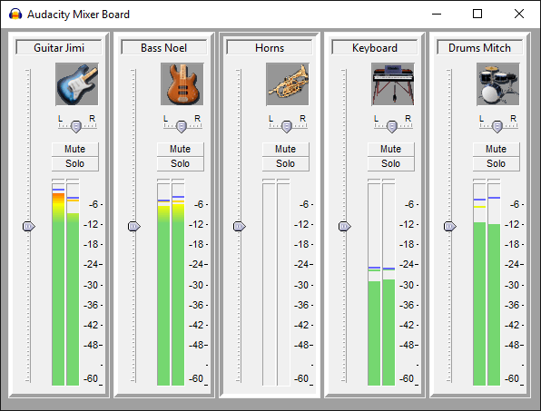

Mixer Board
From Audacity Development Manual
- Accessed by:
The Mixer Board... command is enabled whenever there is an audio track - it can even be brought up during playback. When there are no audio tracks it is grayed-out and unavailable.
- 
Mixer Board controls
All Mixer Board controls update the controls in their respective Track Control Panel and vice versa. For example, muting a track in the Mixer Board also mutes that track in the main tracks window.
As in the Track Control Panels, double-click in either Mixer Board slider to enter an exact gain or pan value in a text box.
The meters are post-fade, like the Meter Toolbars, such that they show the levels as modified by the track's gain/pan sliders and mute/solo buttons. Mono tracks show in both track meters, as in the Meter Toolbar.
You can select a Mixer Board track by clicking its Track Strip on the image near the top. Selection of a track in Mixer Board is indicated by the gray half-border that sits right and bottom of an unselected track moves to left and top of a selected track; in the example above it is the "Horns" track that is selected. Deselect all tracks by clicking in the dark gray between track strips or the dark gray at the bottom of the Mixer Board, note that the shortcut CTRL + SHIFT +A to deselect all tracks does not work in Mixer Board.
- Holding CTRL and clicking in a track's Track Striptoggles the selectedness of that track only. So if a track is not selected, CTRL-clicking its Track Strip selects it, or deselects it if it is already selected.
- If you select a track by clicking on its Track Strip and then use SHIFT and click in another track's Track Strip, all tracks between and including those two tracks will be selected.
Track identification
By default, the image at the top of each Track Strip is the Audacity logo, but if you name the track in the Track Control Panel with an instrument name or abbreviation thereof, Mixer Board automatically shows an appropriate image as listed below. A track name that contains any of the keywords (in bold) will display the image that is associated with those keywords. If the track name contains keywords for more than one instrument, the Mixer Board will display the best match.
|
|
|
Examples:
- "electric b" displays an standard electric guitar ("b" is not a keyword), but "electric bs" displays an electric bass guitar ("bs" is a keyword).
- "electric gtr" will display an electric guitar. Although these keywords are also in the bass guitar list, in the absence of the keywords bass or bs, the Mixer Board sees the (standard) electric guitar as a better match.
- "drums" will display a drum kit as it is a keyword. "drum" will also display a drum kit as it contains dr which is a keyword.